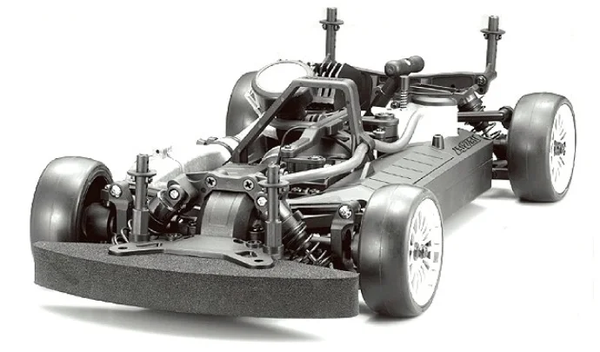

京商 PureTen GP Fazer

引用元画像：rcscrapyard.net
📋 基本情報
| メーカー | 京商（Kyosho） |
|---|---|
| 機種名 | PureTen GP Fazer |
| シャーシ略称 | PureTen GP Fazer |
| 型番 | 31382, 31383, 31387, 31388, 31389, 31390, 31396, 31399, 31400（ボディバリエーションによる） |
| 発売時期 | 2006年 |
| 生産状況 | 生産終了 |
| カテゴリー | ラジコンカー（1/10スケール GPツーリングカー） |
| サブカテゴリー | 4WD エンジンツーリングカー |
| シリーズ | PureTen GPシリーズ |
📏 シャーシスペック
| シャーシ | モールドプラスチックシャーシ |
|---|---|
| ベアリング | フルボールベアリング標準装備 |
⚙️ 駆動系
| 駆動方式 | シャフトドライブ4WD |
|---|---|
| デフギヤ | ギヤデフ |
| ドライブシャフト | ドッグボーンドライブシャフト |
| エンジン | GPエンジン（別売） 推奨：.12〜.15クラス |
🔧 サスペンション
| 形式 | 4輪ダブルウィッシュボーン独立懸架 |
|---|---|
| ダンパー | コイルスプリングオーバーオイルダンパー×4本 |
💡 特徴
PureTen GPシリーズの本格4WDツーリングカー
- 2006年発売、京商のGPツーリングカーシリーズ
- シャフトドライブ4WD方式で高い駆動効率
- フルボールベアリング標準装備で滑らかな動き
豊富なボディバリエーション
- AMG MERCEDES C CLASS DTM 2005（#31382）
- SUBARU IMPREZA WRC 2006（#31383）
- FERRARI FXX（#31387）
- FERRARI F430GT（#31388）
- Aston Martin Racing DBR9 Le Mans 2006（#31389）
- ARTA NSX（#31390）
- McLaren F1 GTR Gulf Racing Le Mans 1995（#31396）
- Aston Martin Racing DBR9 No.009 LM 2008（#31399）
- Porsche 911 GT3 RSR（#31400）
信頼性の高いシャーシ構成
- モールドプラスチックシャーシで軽量化
- ギヤデフで安定したトラクション
- オイルダンパーで高い走行安定性
- ドッグボーンドライブシャフトで確実な動力伝達
🔧 ぽすとそに工房での修理実績
修理難易度
★★★★★（非常に困難）
見る機会が極端に少ないほどレアなシャーシです。パーツ入手が非常に困難です。
よくある故障・注意点
- GPエンジンのメンテナンスが重要（定期的な分解清掃が必要）
- オイルダンパーのオイル漏れ（O-リングシール劣化）
- ギヤデフの摩耗（グリスアップ必須）
- プラスチックシャーシの経年劣化（クラック発生）
- ドッグボーンドライブシャフトの摩耗（高負荷時）
修理のポイント
- GPエンジンは定期的な分解清掃とメンテナンスが必須
- オイルダンパーのO-リングは定期交換推奨
- ギヤデフは定期的なグリスアップで寿命延長
- プラスチックシャーシは慎重な取り扱いが必要
- パーツ入手困難のため、予防的メンテナンスが重要
その他の特徴
- 2006年当時の本格GPツーリングカー
- 希少性が非常に高く、コレクター向け
- パーツ供給が極端に少ない（生産終了）
- 専門的な知識と技術が必要